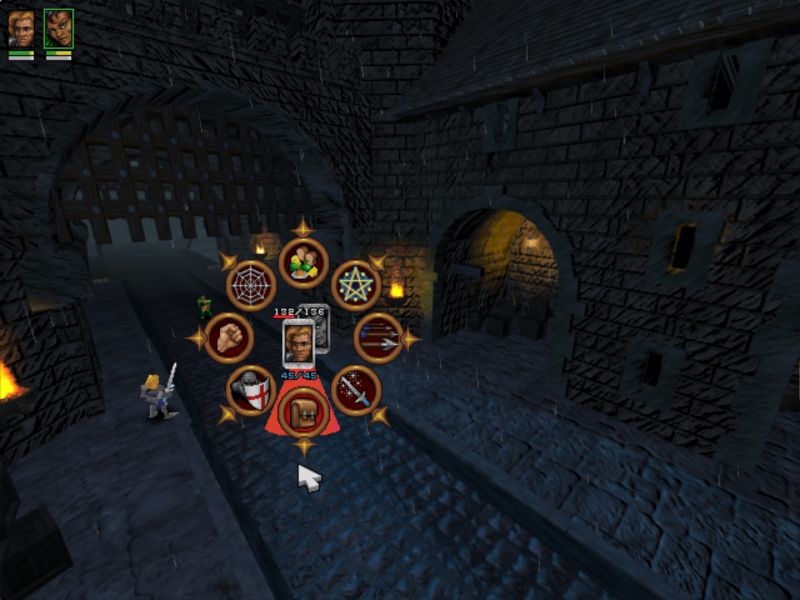
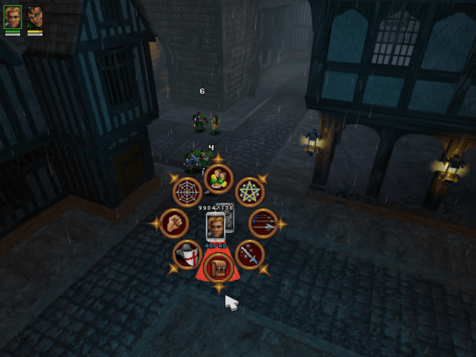

Game Reverse Engineering 101
oder: Wie modifiziere ich ein Spiel?
Was ist Reverse Engineering?
Spiele werden im Normalfall in einer Hochsprache entwickelt
int main() {
Game myGame;
myGame.init();
while(myGame.running) {
// Maus und Tastatur abfragen
// Spiel updaten
// Spiel auf den Bildschirm zeichen
}
return 0;
}Dieser Code wird kompiliert und in Maschinensprache übersetzt
mov ds:dword_55606C, ecx
add edx, [eax+0Ch]
add ebx, [eax+10h]
add edx, ds:dword_5D1BD0[ebx*4]
add edx, ds:dword_5913C8
mov esi, eax
mov edi, edx
mov eax, [esi+4]
mov ebx, [esi+8]
mov ecx, [esi]
...Und wenn das nicht schon schlimm genug wäre...
00011010110111010101000101011001000110101101110101010001010111111Wir gehen nun den umgekehrten Weg
- Einsen und Nullen mit einem Disassambler in Maschinensprache übersetzen
- Decompiler können den Assembler-Code in eine Hochsprache übersetzen
- Decompiled != Original
Wieso macht man sich die Mühe?
- Neugier
- Spaß
- Profit
- Anerkennung
Was kann man mit Reverse Engineering anstellen?
- Remakes / Open Source Engines (OpenRA, OpenAge, freeablo)
- Patches (Bugfixes)
- Modifikationen (TurboHUD)
- Cheats (Trainer, Wallhacks, Aimbot)
- Private Server (WoW)
- Cracks
Disassembler (IDA)

Memory Scanner (Cheat Engine)

Debugger (x64dbg)

Decompiler (Snowman)
Struct Dissector (ReClassEx)

Wir erstellen einen einfachen Cheat!
Cheat Engine öffnen und ans Spiel hängen

Einen einfach zu beeinflussenden Wert auswählen

Im Speicher nach dem Wert suchen
Wert im Spiel beeinflussen
Nach dem neuen Wert suchen

Solange wiederholen bis wir den Wert sicher eingrenzen können 😴
Zur Sicherheit den Wert verändern

🎉🎉🎉

Cheat Table anpassen und speichern

So einfach geht das? 🤔
Es ist nur der erste Schritt auf einer langen Reise
Mein großes Ziel ist es einen Open Source Klon des Spiels Silver zu bauen
Das Spiel verstehen
- Mit Cheat Engine im Speicher nach interessanten Werten suchen
- Mit ReClassEx Strukturen und Klassen wiederherstellen
- Bilder, Sounds, Levels und Texte extrahieren
Das Spiel umbauen
- Die Exe zu einer DLL konvertieren
- Einen Launcher schreiben welcher die DLL lädt
- Jede Funktion nach und nach mit meinen eigenen ersetzen
Original Spiel kann jetzt entfernt werden
🉠Dankeschön â¤ï¸
👏🏻👏🏻👏🏻👏🏻👏🏻
Und weil das Thema so umfangreich ist könnt ihr mich gerne jederzeit Fragen
- Mail: michael@malura.de
- Twitter: @devnetik